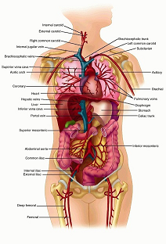
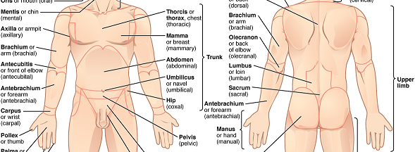

The Trunk(Torso)
 General Structures
The trunk includes the chest (in front), the back, the shoulders and the abdomen.
The internal organs which we cannot see, are the heart, the lungs, the stomach, the liver with the gall-bladder, the pancreas, the spleen, the kidneys and the small and large intestines (bowels).
| Information/Organs | Heart | Lungs | Stomach | Liver |
|---|---|---|---|---|
| Facts | The human heart has four chambers: two upper chambers(the atria) and two lower ones (the ventricles). The right atrium and right ventricle together make up the "right heart," and the left atrium and left ventricle make up the "left heart." A wall of muscle called the septum separates the two sides of the heart. | Lungs are sacks of tissue located just below the rib cage and above the diaphragm. There are two lungs in human body - the right lung and the left lung. These two lungs together weigh 2.9 pounds or 1.3 kilograms. The left lung is lighter than the right lung. | The widest and most distensible part of your digestive system, called stomach is a J-shaped or bean-shaped sack, a muscular organ located on the left side of the upper abdomen, behind the lower ribs. | The liver is a large, meaty organ that sits on the right side of the belly. Weighing about 3 pounds, the liver is reddish-brown in color and feels rubbery to the touch. The liver has two large sections, called the right and the left lobes. The gallbladder sits under the liver, along with parts of the pancreas and intestines. |
| Functions | Human heart is an organ that pumps blood throughout the body via the circulatory system, supplying oxygen and nutrients to the tissues and removing carbon dioxide and other wastes. | Lungs, the important part of the respiratory system and waste management for the body, fuel us with oxygen. They breathe in air, then extract and pass oxygen to the bloodstream, also exchange oxygen to carbon dioxide when we exhale which avoid cells dying and body suffocating. | Stomach secretes hydrochloric acids and enzymes that break down(digest) the food, then the stomach muscles contract in a process called peristalsis to mix the food with the acid and enzymes. Acid in stomach also works to kill harmful microbes that may have made their way into the body along with food and drink. | The liver's main job is to filter the blood coming from the digestive tract, before passing it to the rest of the body. The liver also detoxifies chemicals and metabolizes drugs. The liver also makes proteins important for blood clotting and other functions. |
| Effect to Health | Anxiety in a long period of time. Nonstop nervous and frighten. Getting extremely scare in the moment or unhealthy meals can lead to heart attack, heart disease, blood flow disorder. | Smoking is the most dangerous factor that causes lung cancer, even if the person does not smoke, for example, sitting near the smoking person. Second factor is the polluted atmosphere. | Not having meals on time is the big problem to stomach. Spicy food or sodium-contained products can destroy the stomach. | Drinking is one of the high-rate bad-affect to the liver. Or may be just simply drinking not enough water. |
| Stay Healthy | For a healthy heart and lungs, the person should take exercises everyday, have quality food and drinks such as vegetables and fruit smoothies. Avoid stress in a long period of time. Stop smoking or living in the polluted environment. | Having 3 meals on time everyday, should not take too much or too less. Remember breakfast is the most important intake of the whole day. Restrict to too hard or spicy food or too much sodium. Eat more vegetables and fruit everyday. | Drinking a lot of water everyday. Prevent alcohol and beer. | |
| Information/Organs | Pancreas | Spleen | Kidneys | Bowels |
|---|---|---|---|---|
| Facts | The pancreas is an abdominal organ that is located behind the stomach and is surrounded by other organs, including the spleen, liver and small intestine. The pancreas is about 6 inches (15.24 centimeters) long, oblong and flat. | The spleen is an organ in the upper far left part of the abdomen, to the left of the stomach. Its commonly fist-shaped, purple, and about 4 inches long is protected by the rib cage. | Most people have two kidneys. They are bean-shaped organs located on both sides of the spine, behind the stomach. Each one is about the size of an adult fist. | The body has two types of intestines. The small intestine(22 feet or 6.7 meters long) is connected to the stomach and handles the middle part of the digestion process. The large intestine(6 feet or 1.8 meters long), also called the colon, is part of the final stages of digestion. |
| Functions | The pancreas plays an important role in digestion and in regulating blood sugar. It produces enzymes to digest proteins, fats, and carbs in the intestines and creates the hormones insulin and glucagon. | The spleen acts as a filter for blood as part of the immune system. Old red blood cells are recycled in the spleen, and platelets and white blood cells are stored there. The spleen also helps fight certain kinds of bacteria that cause pneumonia and meningitis | Kidneys keep the composition of blood in the body balanced to maintain good health. They filter extra water and toxins from the blood, then create the amount of urine which is evacuated toxics and excess out of our body. | The function is to get rid of food left over after the nutrients are removed from it, bacteria and other waste. This process is called peristalsis and can take around 36 hours. Once or twice per day, when the body is ready for a bowel movement, the waste is dumped into the rectum. |
| Effect to Health | Most of inner organs usually are affected by the inproper intakes, accidents lead to injure, lacking of sleep duration and stress. | |||
| Stay Healthy | The best ways to keep healthy are reasonable meals coming along with doing exercises regularly. | |||